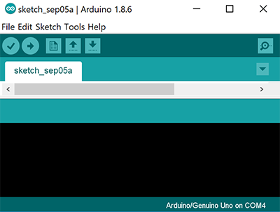

Goals
- Learn the basics of Arduino by controlling LEDs and motors.
- Assemble a basic body for the robot.
- Program the robot to move in a square shaped path.
Sub-teams
Subteam 1: Hadi and Alberto
Subteam 2: Ian and Yanrui
Prelab
Click here to download the Arduino IDE. After installing it, you should be able to see something like this:
Internal LED blink
Firstly, open the Arduino IDE -> File -> Examples -> 1.Basics -> Blink. Then, click the checkmark to compile the code -> click the right arrow to upload the code to the Arduino. Following these instructions, we made the built-in LED blink, as seen in the video below. Warning!! Make sure your Arduino IDE is connected to right COM port. You can verify this by navigating to Tools -> Ports.
[Code for this step]
// the setup function runs once when you press reset or power the board
void setup() {
// initialize digital pin LED_BUILTIN as an output.
pinMode(LED_BUILTIN, OUTPUT);
}
// the loop function runs over and over again forever
void loop() {
digitalWrite(LED_BUILTIN, HIGH); // turn the LED on (HIGH is the voltage level)
delay(1000); // wait for a second
digitalWrite(LED_BUILTIN, LOW); // turn the LED off by making the voltage LOW
delay(1000); // wait for a second
}
External LED blink
After Internal LED Blink, let us blink an External LED! Pick up an LED and a resistor. Then, connect the LED and Resistor on breadboard, use a different pin and modify to blink Internal LED. Great! The External LED blinks, see the video below. Warning!! Make sure your LED is connected to a resistor at least 300ohm, unless you want to blow up your Arduino.
[Code for this step]
// the setup function runs once when you press reset or power the board
int led_pin = 10; //pin connected to external LED
void setup() {
// initialize digital pin LED_BUILTIN as an output.
pinMode(led_pin, OUTPUT);
}
// the loop function runs over and over again forever
void loop() {
digitalWrite(led_pin, HIGH); // turn the LED on (HIGH is the voltage level)
delay(1000); // wait for a second
digitalWrite(led_pin, LOW); // turn the LED off by making the voltage LOW
delay(1000); // wait for a second
}
Read the potentiometer
After External LED Blink, Let us Read Analog value of Potentiometer! Pick up a potentiometer and a resistor. Then, connect the potentiometer and resistor on breadboard, use the Analog Pin A0 and write code to read the value. Remember to click Serial monitor to see the value (on the top right of Arduino IDE). Cool! Get the value of the potentiometer, see the video below. Warning!! Make sure your Potentiometer is connected to a Resistor at least 300ohm, unless you want to blow up your Arduino.
[Code for this step]
int analog_pin = A0;
void setup() {
// initialize serial communication at 9600 bits per second:
Serial.begin(9600);
}
void loop() {
// read the input pin:
value_analogRead = analogRead(analog_pin);
Serial.println(Value_analogRead);
delay(10); // delay in between reads for stability
}
Analog Output (PWM)
In this step, we connect the previous two steps to read the value of potentiometer and put the output to External LED. Note you can learn PWM here.
[Code for this step]
(...)
void start_now() {
Serial.begin(9600);
pinMode(analog_pin, INPUT);
pinMode(led_pin, OUTPUT);
}
void setup() {
start_now();
}
void loop() {
int value_analogRead = analogRead(analog_pin);
Serial.print(value_analogRead*5.0/MAX_READING);
Serial.println(" Volts");
output_to_led(value_analogRead);
}
void output_to_led(int value) {
int new_value=map(value,0,MAX_READING,0,255);
analogWrite(led_pin,new_value);
}
Click here to see full code for this part
Parallax Servos
Pick up a Parallax Servo. Remember: Red Line = Vcc, Black Line = GND, White Line = Signal. Unlike a regular servo that is usually limited to 180 degrees and control the angle, a continuous servo (like the one used for this lab) can be controlled with direction and speed.
Click File -> Examples -> Servo -> knop to open your demo code. Then connect your previous coding with the servo. To make the servo move, connect the previous three steps. See the video below.
[Code for this step]
(...)
void start_now() {
Serial.begin(9600);
pinMode(analog_pin, INPUT);
pinMode(led_pin, OUTPUT);
MyServo.attach(Servo_pin);
}
void setup() {
start_now();
}
void loop() {
int value_analogRead = analogRead(analog_pin);
Serial.print(value_analogRead*5.0/MAX_READING);
Serial.println(" Volts");
output_to_led(value_analogRead);
move_motor(MyServo, value_analogRead);
}
void output_to_led(int value) {
int new_value=map(value,0,MAX_READING,0,255);
analogWrite(led_pin,new_value);
}
void move_motor(Servo motor, int value){
int new_value=map(value,0,MAX_READING,0,255);
motor.write(new_value);
}
Click here to see full code for this part
Assembling the robot
To assemble the robot, we looked at previous designs and decided the cleanest design with the parts available. We chose a laser-cut plexiglass with a breadboard glued to it, to facilitate the connections with the Arduino.

Next, we attached the servo mounts and the servos themselves. We tried using the 3D-printed battery holders, but they were too large for the battery and didn’t provide the sturdiness we expected. In turn, we temporarily used a zip-tie.

We assembled the wheels to the servos with no issues. However, the ball bearing was too short, so we had to use the plastic extension shown in the picture. We are going to 3D-print a new ball bearing, because the extension causes undesirable wiggling that could lead to instability and malfunctions later in the project.
We next mounted the Arduino (partially on top of the breadboard) and used 2 plastic extensions, nuts and bolts to provide the desired stability, as shown below.

Make the Robot Go!
Now using what we have done to run the motors, we can use it to control two motors to move in a square.
ReminderUnderstand how to make servos move forward and backward in different velocity.
[Code for this step]
#include < Servo.h >
int MAX_READING = 1023;
int analog_pin = A0;
int led_pin = 11;
int leftServo_pin = 5;
int rightServo_pin = 6;
Servo leftServo;
Servo rightServo;
void start_now() {
Serial.begin(9600);
pinMode(analog_pin, INPUT);
pinMode(led_pin, OUTPUT);
leftServo.attach(leftServo_pin);
rightServo.attach(rightServo_pin); //check pin
}
(...)
Click here to see full code for this part
Extra step
If you want to make more things in lab. The following would be a great reference.
The modification I added since we had extra time was a basic microphone circuit. This was done before realizing this is very similar to the next lab. Regardless, I guess we are ahead of the game.

The way the circuit works is as follows. The signal starts at the microphone. One leg of the microphone is pulled up to 5 volts through a resistor, the other is set to ground. When sound hits the microphone the microphone alternates the voltage on its pulled up leg as a direct representation of the sound. I then isolate the AC component by passing it through a capacitor. This signal then goes to the noninverting side of an LM358 op amp. In this case we use a 25k resistor and a 50 ohm resistor to amplify by a factor of 501.
If we left it like this we would have a detectable signal. Unfortunately this signal would vary between about +-2.5 volts, so we add a DC offset through two 1k resistors to the noninverting input of the op amp. I also added a capacitor in line with the 50 ohms resistor to make it so the dc offset is not amplified. I then fed this signal to the analog input of the Arduino Uno. This signal is sampled at a rate of 9.5kHz until 128 samples are collected. The way I have it currently setup it can easily detect a signal anywhere between 100hz and 4.25khz. I had to “detach” the servos while sampling or else the PWM interrupts would interfere with sampling.
From there frequency of the whistle is used to control whether the robot is moving straight, turning, or stopped, depending on how high the frequency is.
[Code for this step]
void setup()
{
int leftServo_pin = 5;
int rightServo_pin = 6;
sampling_period_us = round(1000000 * (1.0 / samplingFrequency));
Serial.begin(115200);
}
void loop()
{
leftServo.detach(); //Detach the servos so that the PPM interrupt doesnt interfere with sampling
rightServo.detach();
delay(30);
for (int i = 0; i < samples; i++)
{
microseconds = micros();
vReal[i] = analogRead(A0);
vImag[i] = 0;
while (micros() < (microseconds + sampling_period_us)) {
}
}
(...)
Click here to see full code for this part